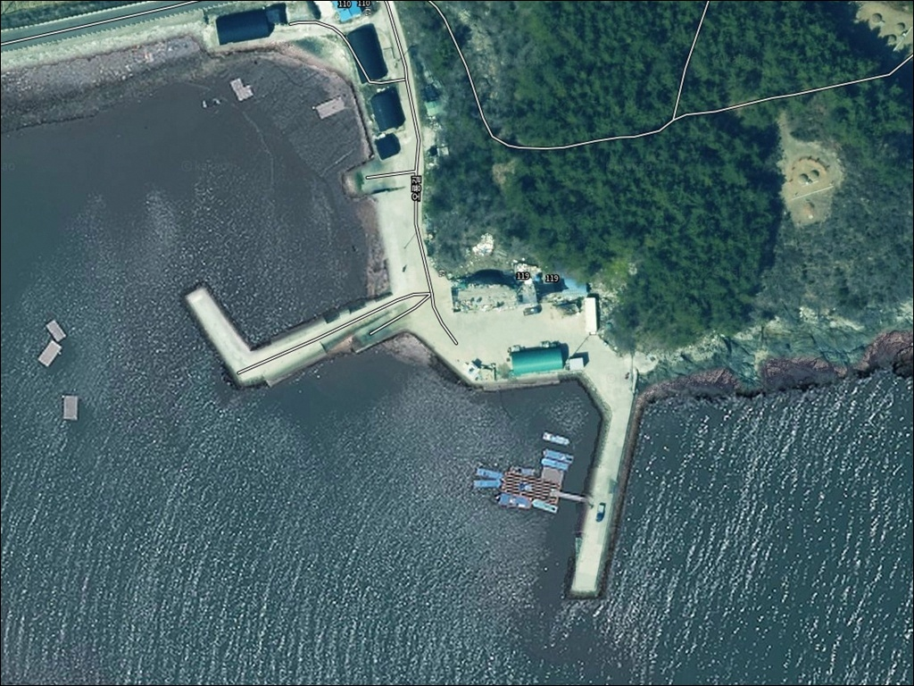
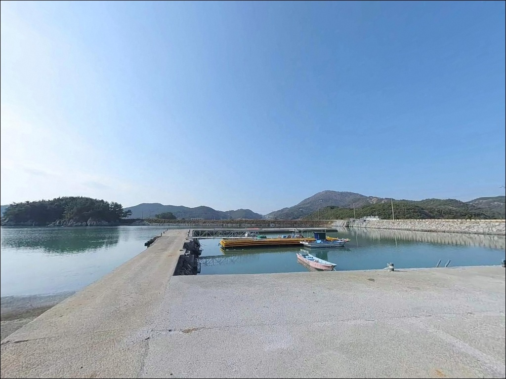
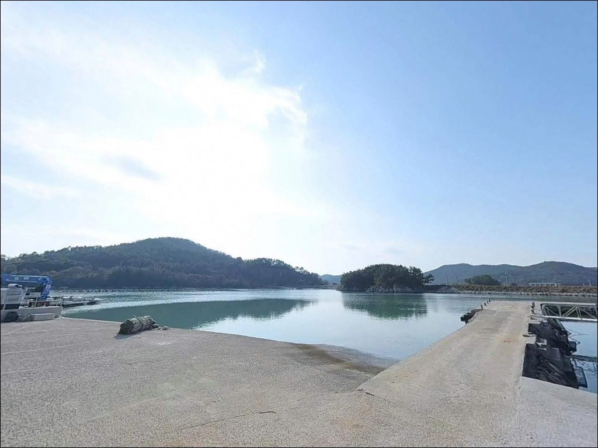
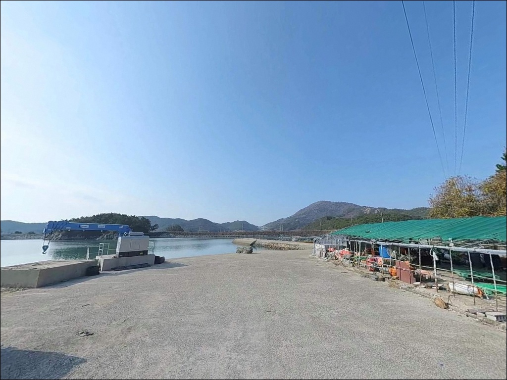
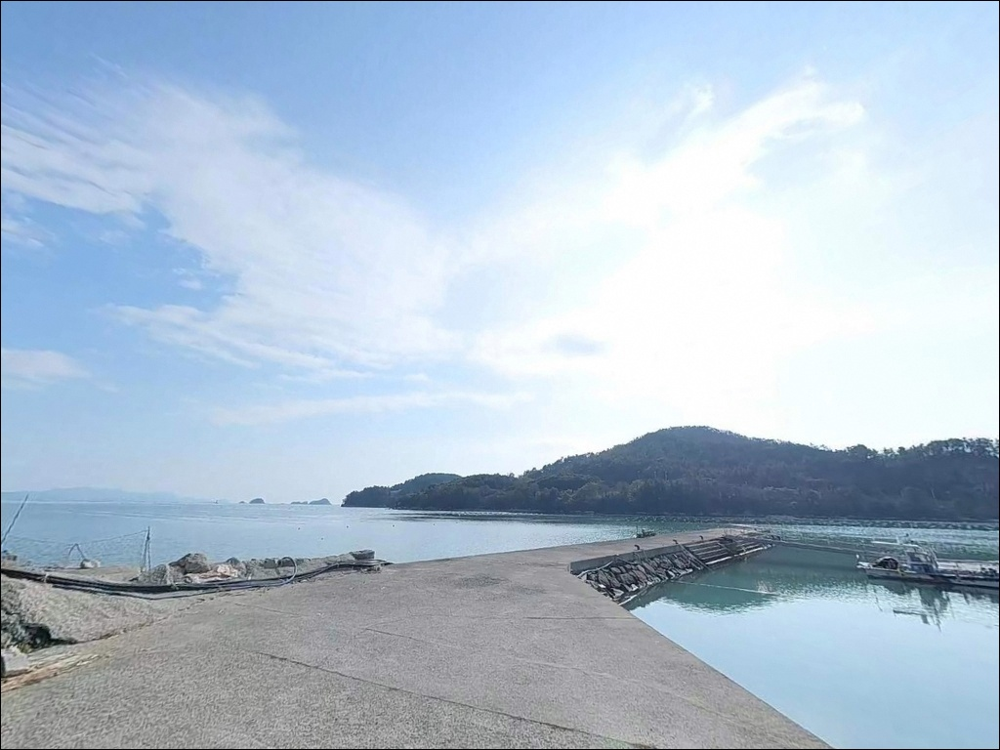
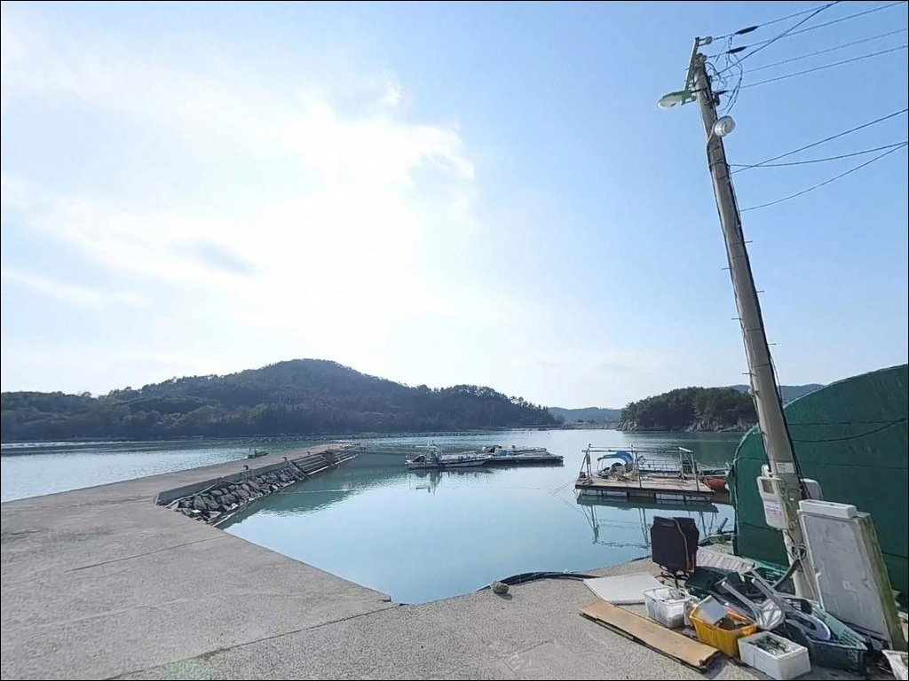
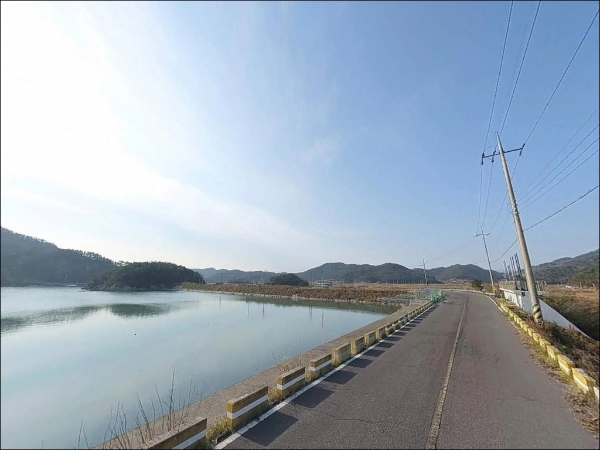
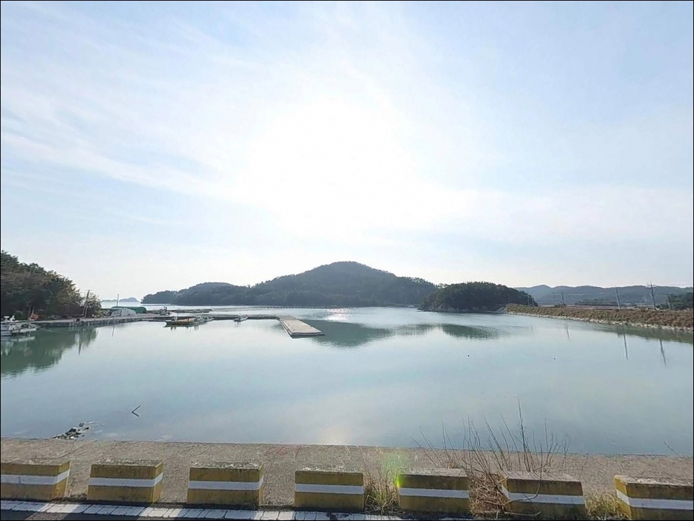

간조 때 내항 수심 바닥 드러나는 고흥 사덕항, 초들물에 맞춰 들어가는 방파제 낚시
이 페이지에는 광고(제휴 링크 포함)가 있으며, 광고 링크를 통해 구매하면 운영자가 판매 수익 또는 수수료를 받을 수 있습니다. 포인트 사진: 카카오맵 스카이뷰·로드뷰. 이 페이지의 지도·사진 이미지는 카카오맵의 실제 서비스 이미지와 다를 수 있습니다.


포인트 안내
사덕항(사덕리방파제) (사덕항)
전남 고흥군 도화면 사덕리 산 130-1
사덕항은 만조 전후 타이밍을 놓치면
방파제 안쪽 수심이 급격히 낮아져
채비 운용 자체가 제한되는 구조입니다.
초들물~만조 구간을 기준으로 출조 시각을 맞추는 것이
이 포인트에서 가장 먼저 해야 할
판단의 출발점입니다.
고흥군 도화면 사덕리에 자리한 이 방파제는
지방어항으로 등록된 공식 항구로,
'ㄱ'자 형태의 메인 방파제와
안쪽 소형 선착장으로 구성되어 있습니다.
거금수도 조류의 영향을 받는 위치에 있어
낚시 시간대 선택이 조과를 좌우하는
전형적인 남해 연안 방파제 포인트입니다.
이 글은 사덕항(사덕리방파제)의 진입 동선,
차박 여건, 지형 기반 낚시 방식 적합성에 집중합니다.
조황 단정이나 특정 어종 보장은
이 글의 범위에 포함되지 않습니다.

1. 진입 동선과 포인트 접근성
사덕항은 도화면 소재지에서 연결된
왕복 2차선 도로를 통해 항구 입구까지
도로 상태가 양호하게 이어집니다.
일반 승용차는 물론이고 SUV 기준으로도
방파제 초입까지 무리 없이 진입하는
동선이 확보되어 있습니다.
항 내 물량장이 넓어
대형 캠핑카와 카라반도 회차가 자유롭습니다.
도화면 일대 소형 어촌 방파제들과 비교하면
진입과 회차 여건 모두 상위권에 해당합니다.
방파제 시작 지점의 넓은 공터와
선착장 내 물량장 구간에
여러 대가 동시 주차 가능한 공간이 있습니다.
낚시 자리 바로 뒤에 차를 대고
장비를 내릴 수 있는 구간도 존재해,
이동 동선이 짧은 편입니다.
어선 조업 동선을 방해하지 않는 구역을
먼저 확인하고 자리를 잡는 것이
기본 매너입니다.

2. 차박 환경과 야간 체류 여건
사덕항은 항구 전반에 가로등이 설치되어 있어
야간에도 기본적인 시야 확보가 됩니다.
주변이 산과 바다로 둘러싸인 지형이라
생활 소음이 적고, 차량 통행 빈도도
낮아 야간 체류 환경은
조용한 편입니다.
항구 입구 인근에 공중화장실이 위치해 있어
장시간 차박 체류 시 기본 위생 여건이
갖춰져 있는 것이 이 포인트의 장점입니다.
편의시설이 전무한 소형 어촌 방파제들과 비교하면
차박 운용 편의성이 한 단계 높은
포인트에 해당합니다.
다만 지방어항 특성상
어선 입출항이 이루어지는 공간이므로
이른 새벽 어업 활동 시간대에
주차 위치가 조업 동선을 막지 않도록
사전에 자리를 잡아 두는 것이 중요합니다.


3. 주변 편의시설 및 인프라 현황
사덕항 반경 3km 이내,
도화면 소재지(오치리) 방향에
도화농협 하나로마트, 편의점, 식당, 주유소가
밀집해 있습니다.
출조 전 보급 거점으로 활용하기에
차량 기준 5~10분 거리로
접근이 원활한 편입니다.
미끼·얼음·연료·식수는 도화면 소재지에서
사전에 확보하고 이동하는 것이
현장 대기 시간을 줄이는 효율적인 방식입니다.
반경 10km권으로는 발포해수욕장과
발포항 일대가 위치해 있어
당일 일정을 넓게 구성하는 것도 가능합니다.
응급 상황 발생 시
도화보건지소가 인근에 있으며,
고흥읍까지는 차량으로 일정 거리를 이동해야 하므로
비상 연락처와 약품은 출발 전에
반드시 챙겨두는 것이 기본입니다.

4. 이 포인트에서 물때가 중요한 이유
사덕항은 거금수도 조류의 영향을 받는 위치에 있습니다.
초들물~만조 구간에 채비 컨트롤이 가장 안정적이며,
간조 시에는 방파제 내항 쪽 수심이
낮아지는 구간이 생깁니다.
출조 시각을 물때 기준으로 역산해두지 않으면
낚시 자리 선택 자체가 제한됩니다.
바다타임에서 사덕항 인근 기준 물때를 확인하고,
초들물 시작 시각으로부터
역산해 출발 시각을 결정하는 방식이
이 포인트 공략의 기본 전략입니다.
기상 변화도 빠른 남해 연안 특성상
당일 아침 기상청 해양기상 예보를
다시 한번 확인하는 것이 좋습니다.
방파제 외항 끝단 테트라포드 구간은
이끼로 인해 미끄러울 수 있습니다.
진입 시 반드시 구명조끼와
미끄럼 방지 신발을 착용해야 하며,
어선 입항 동선에서 비켜난 자리를
먼저 확인하고 앉는 것이
현장 매너의 기본입니다.

5. 지형 기반 낚시 여건 분석
사덕항의 핵심 지형은 'ㄱ'자로 꺾인
메인 방파제 구조입니다.
방파제가 꺾이는 지점과 끝단에서
수심 변화가 뚜렷하게 형성되며,
이 구간이 낚시 자리로서
가장 유효한 지점입니다.
방파제 끝단 기준 수심은 5~7m 내외이며,
간조 시에도 일정 수준의 수심이 유지됩니다.
바닥은 펄과 모래가 혼합된 구조에
군데군데 수중여가 발달해 있습니다.
외항 쪽에는 석축과 테트라포드 구간이
혼재되어 있어 어류의 은신처 역할을 하며,
내항은 콘크리트 평탄화가 잘 되어 있어
낚시 발판이 안정적인 편입니다.
거금수도 조류가 흐르는 구조상
방파제 외항 방향에서 들물과 날물에 따라
일정한 흐름이 형성됩니다.
이 흐름이 회유성 어종의 이동 경로와
겹치는 구간이 생기며,
조류 변화가 큰 사리 전후보다
조금 전후 타이밍이 채비 운용에 유리합니다.
출조 전 최신 조황은 반드시 검색해 보시기 바랍니다.


6. 포인트에 어울리는 낚시 스타일
사덕항 지형에서 가장 무난하게 맞는 방식은
원투낚시입니다.
내항과 외항 모두 원투 운용이 가능하고,
펄·모래 혼합 바닥에 수중여가 군데군데 있어
바닥 걸림이 크지 않은 편입니다.
청갯지렁이 미끼가 기본이며,
도다리·보리멸·성대 계열을
기대해 볼 수 있는 지형 조건입니다.
찌낚시는 방파제가 꺾이는 지점과
끝단 갯바위 접점 구역이 핵심 자리입니다.
수심 5~7m 구간에서 저부력 구멍찌 반유동채비를
운용하는 방식이 이 포인트 수심과 잘 맞으며,
감성돔과 숭어를 노리는 조사들이
주로 이 구역을 선택합니다.
가을(8~11월) 시즌이 감성돔 활동이 활발한 시기입니다.
에깅과 볼락 라이트게임도
이 포인트에서 운용이 가능합니다.
야간에 항구 가로등 주변으로 집어되는
볼락을 소형 지그헤드채비로 노리는 방식이
내항 발판에서 자주 이루어지며,
가을철에는 갑오징어와 주꾸미 에깅도
방파제 외항 방향으로 운용이 가능한 시기입니다.

7. 대안 포인트와 플랜 B 동선
사덕항에 낚시인이 몰리거나
어선 조업으로 자리 확보가 어려울 때는
발포항 방파제가 첫 번째 대안입니다.
사덕항에서 약 7~10km 거리이며,
규모가 더 크고 거금수도 방향으로
열린 구조를 갖춰 외해성 회유 어종
유입이 비교적 많은 포인트입니다.
발포항은 도화면에서 가장 알려진 방파제로,
테트라포드 외항 구조와 다양한 낚시 방식이
운용 가능한 조건을 갖추고 있습니다.
사덕항을 주 포인트로 잡고
발포항을 백업으로 엮는 동선이
도화면 당일 출조에서 가장 효율적인 구성입니다.
구암방파제도 사덕항 인근의
조용한 소형 포인트로,
주차 여건이 비슷하고
낚시인 밀도가 낮은 편이라
혼잡을 피하고 싶을 때
선택해 볼 수 있는 대안입니다.
반경 10km권으로는
지죽도 일대 해역까지 포인트 범위를
확장할 수 있습니다.

차 대고 바로 낚시,
사덕항은 준비된 낚시인에게 맞는 포인트입니다
원투낚시나 감성돔 찌낚시를 즐기는 낚시인이라면
사덕항의 지형 조건은 잘 맞는 구조입니다.
진입이 쉽고 물량장 주차 공간이 넓어
장비를 많이 들고 움직이는 낚시인에게도
부담이 적은 포인트입니다.
공중화장실이 있어
가족 단위 차박 출조로도 무난합니다.
반면 물때 계산 없이 간조 시간대에 도착하면
내항 쪽 수심이 빠지면서
채비 운용이 제한됩니다.
초들물~만조 구간 출조 계획,
도화면 소재지에서의 사전 보급,
어선 동선을 피한 자리 선정,
이 세 가지를 갖추고 가면
사덕항은 기대를 저버리지 않는
도화면 대표 생활 낚시 포인트가 됩니다.
야간 에깅이나 볼락 라이트게임을
겸한 차박 낚시를 계획 중이라면,
가로등과 화장실이 갖춰진 이 포인트에서
거금수도 조류 흐름과 함께하는
하룻밤이 효율적인 선택이 됩니다.